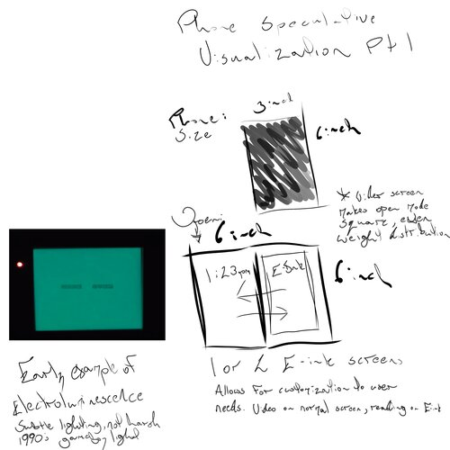
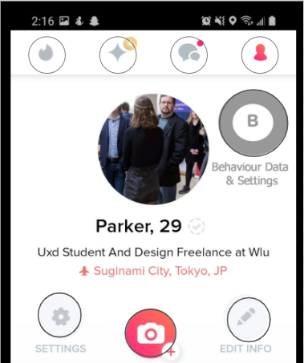

Below is a short (Incomplete) list of Projects I have contributed to.

Phone and Door Concept
This synthesized design concept started as a 2 screen e-ink fold phone after I continuously observe elderly individuals, and younger people with sight issues, struggle with their phones or when they use a friends phone. The door concept came to be upon watching my Grandmother struggle with opening doors that I, an average young male, have no issues with. The combination of the two was brought about to solve an issue that came up with designing the door, how would it lock and how would the locking mechanism function?
For those with poor sight viewing your normal displays that emit light, it becomes difficult for them to make out fine details such as type. Being unable to read texts or emails from family or friends is an issue, as well as making out a touch typing text to send. The 2 screens allow for one to be dedicated for typing and the other viewing, and e-ink displays emit no light. The door concept would allow for adaptive responses to an individual’s strength when attempting to open a door, aiding In opening if the amount of force output is not enough to open the door, and remaining neutral if the force is adequate. Those not physically capable of easily opening a door will no longer feel trapped in, or out of, their own home or businesses.
The marriage of the two concepts was, again, brought about by the problem of the door locking. I wanted to create a way where unlocking was simple as well, as when I view my grandmother, who has arthritis, attempting to use a key to unlock the door normally, it is obviously difficult. Alongside the act of unlocking came the issue of wheelchairs, or those momentarily encumbered with groceries, babies, or other objects, the door needed to be able to be opened from a distance automatically. Thus phone-door communication was birthed.
Both of these problems, and their solutions (in concept), were stirred by observation. The phone was inspired by the elderly, wishing they could use the devices I use to at least a passable degree, I aimed to include them as best I could. For the door, I found that the diversity of the human form was not being realized in the implementation of your standard door. I took the physical capability of my Grandmother and sought to examine what she was capable of, and apply it to other people.
The ergonomic design of the e-ink phone is an issue that still needs to be worked on. It is not intuitive which way the phone should be held. The door issue I recognized was rectified in the revision within the synthesized model. I became more critical of my overall design thinking process, and to be more observant of the world around me.
This conceptualization process made me more aware of capability disconnects in the real world, and constantly devising ways to remedy these problems, through dialogue and observation of those affected.
Cryptex Language Loop
The English Proficiency Do it Yourself endeavour, otherwise known as the Language Loop, is a prototype stemming from a project that I was a part of in the fall of 2020. This projects aim is to allow individuals to create a device that allows them to gamify the language learning process. While this object was created with English in mind, it could be tooled to any individual language to any other.
The device was spawned when a chosen problem was picked from a long list of societal issues the world currently faces. More specifically we went with problems that a group member faced in their youth where their immigrant family had difficulty understanding and learning the English language. The largest problem faced when moving past the initial “pick problem” stage was how to create something that could be recreated by, essentially, a novice with minimal tools at hand. Conquering this task was simple enough by making sure that anything used was low cost, a by product of consumption, utilitarian, or a mixture of all three. With limitations in place on what could be used to construct the device we set forth to be inspired by the world around us.
Unfortunately, when it comes to talking about things that did and did not work, it is difficult to say. As we were inspired by an already existing device in the world, the Cryptex,. we almost immediately knew what needed to be altered and added to make our device functional at a prototype level. Ideation led quickly to creation of a prototype that we met in person to create. From researching the issues and collectively ideating the design, I found that the issue that we were focusing on was far too positive. What could that possibly mean, you may ask.
What I mean from this is that our initial inspiration for what social issue to tackle was from the point of view of someone who chose to emigrate to a different country. From this I now better understand that designing for one group of users could affect another group that you had never even thought of in a positive manner. The group that I can think of for the Language Loop, are refugees in Canada or other countries who did not voluntarily choose to emigrate.
Through this journey I feel as though I have improved my levels of empathy and seeing beyond my own design / preconceptions to something larger. I hope to hone this skill even further

Tinder Taming Project
In the current era we are living in, a Covid one, social engagement is blunted by social distancing. People are turning to apps to communicate more than ever, trying to find relationships or simple friendship. The goal behind the Tinder Taming app changes is to integrate features that allow others to see general behavioural traits a person has displayed on the app. Why was this something that was focused upon? Well, young men take Tinder as Hookup app and harass young women. I have people I know that shy away from many apps due to these problems, which is why I feel it is important to tackle these pervasive issues.